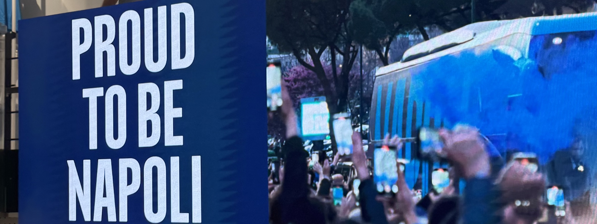

Sección I
El Mito y el Origen
Todo comenzó con Parténope, la sirena que, al no poder encantar a Ulises, eligió nuestras rocas para su último descanso. De su cuerpo nació el suelo que pisamos, vigilado por el gigante de fuego: el Vesuvio, guardián y amenaza de nuestra historia. Caminar por estas calles es pisar un puente invisible construido con piedra volcánica, donde el mito se funde con la realidad en cada esquina.
Sección II
El Ritual del Café
El día en Nápoles no comienza con el sol, sino con un aroma que no conoce fronteras y que lo inunda todo. Aquí, el café es mucho más que una bebida; es un rito sagrado, una pequeña pausa de esperanza que nace del silbido de una MOKA en la cocina. Es el primer encuentro del día, un vapor que sube desde el Tirreno para recordarnos que estamos vivos. En cada taza se esconde la necesidad de compartir, de detener el tiempo antes de lanzarse al bullicio de la ciudad.
Sección III
La Suerte y el Destino
Caminar por los barrios españoles es desafiar al destino con un corno siempre escondido en el bolsillo. Es nuestra superstición roja, un amuleto que nos protege del mal de ojo y de las incertidumbres del mañana. En Nápoles, la suerte no se espera, se persigue entre amuletos y gestos antiguos. He aprendido que vivir aquí es tener la valentía de confiar en el azar, aceptando que la magia y la realidad son dos caras de la misma moneda napolitana.
Sección IV
El Caos Armónico
Nápoles no se visita, se sobrevive; es una experiencia que te atraviesa los sentidos. Su caos es una danza perfectamente orquestada de motos esquivando lo imposible, voces que se gritan de balcón a balcón y mercados que nunca parecen dormir. Es un desorden que no asusta, sino que alimenta el alma con una vitalidad compartida. Es esa energía frenética la que te hace sentir realmente vivo, ya sea esquivando un coche en una calle estrecha o dejándote llevar por la corriente humana de Spaccanapoli.
Sección V
El Aliento del Mar
Frente al mar de Mergellina existe un silencio particular, un respiro profundo que solo el Tirreno sabe dar al alma. Es el verdadero pulmón de la ciudad, el lugar donde el horizonte se abre para recordarte che siempre hay un camino de vuelta, sin importar cuán lejos te lleven tus pasos. Ese azul infinito es una nostalgia líquida que nos define; buscamos el reflejo del agua en cada rincón, intentando encontrar ese alivio que solo el golfo puede ofrecer a quienes nacieron bajo su brisa.
Sección VI
El Oro del Atardecer
Si hay algo que define a esta tierra sin necesidad de palabras, es la luz de sus atardeceres. Cuando el sol comienza a descender, baña todo el Golfo de Nápoles con un oro intenso antes de que llegue la noche. Es un momento mágico donde el cielo parece incendiarse, tiñendo las fachadas de un naranja fuego que parece sacado de un lienzo barroco. En ese instante, la belleza es tan abrumadora que cualquier distancia desaparece, recordándome que bajo este sol sol siempre estaré en casa.

Sección VII · Síntesis Personal
NÁPOLES
✦
Nápoles me ha dado la base sobre la cual construir mis sueños y la forma de mirar el mundo con ojos mediterráneos.